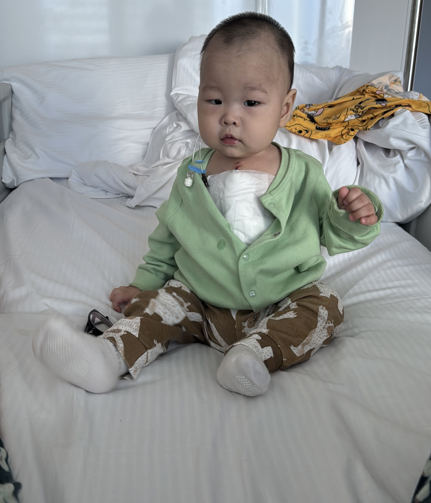
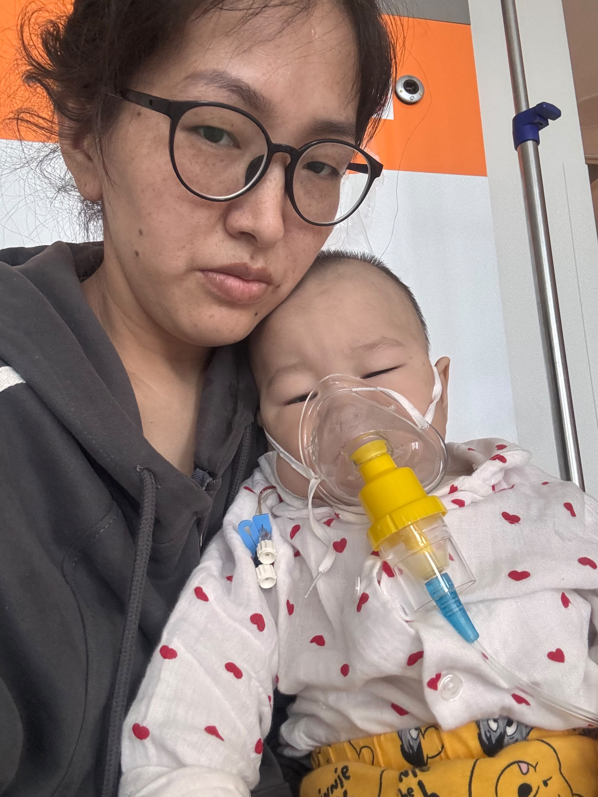
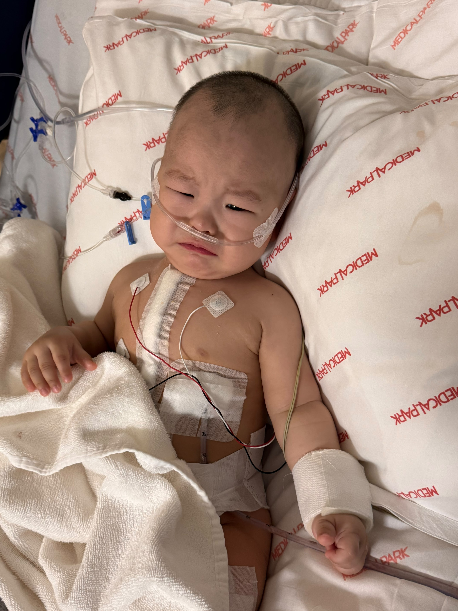
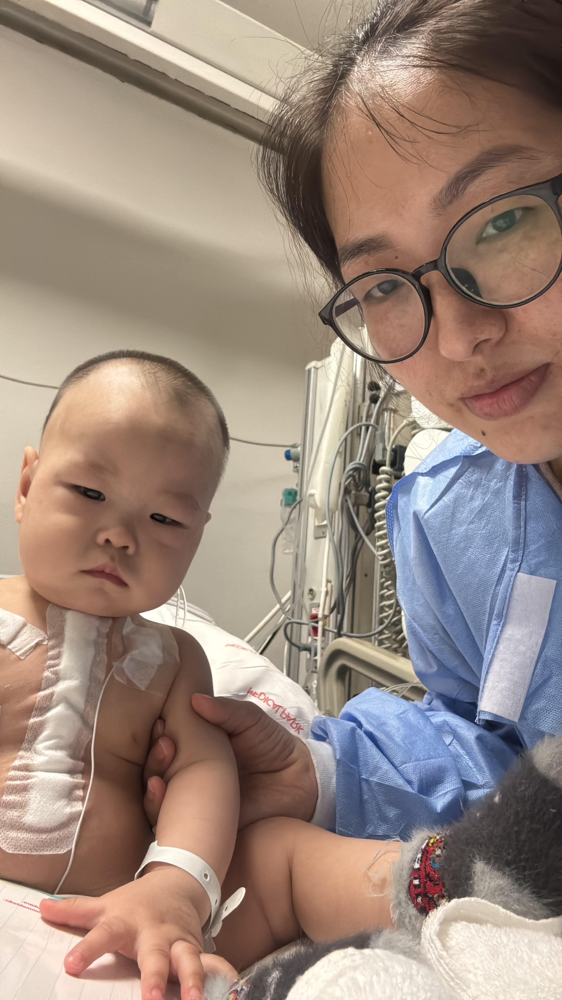
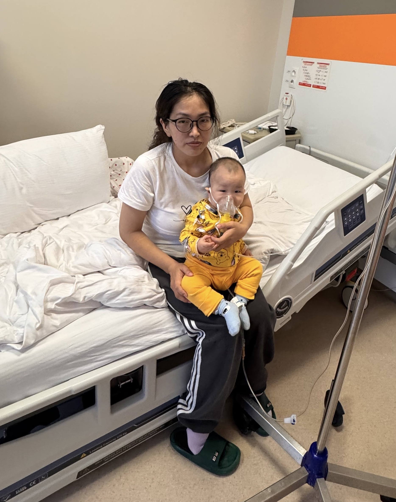

01
Первые симптомы - 2024 год
В три месяца Арыстан начал часто болеть. Врачи лечили пневмонию, но болезнь возвращалась снова и снова. В шесть месяцев после обследований обнаружили страшное — опухоль в сердце.


Арыстану срочно нужна вторая операция, чтобы удалить часть опухоли сердца в Турции
Әделбай Арыстан Медетұлы · 2 года 6 месяцев
0 ₸
на собрано
цель
1 000 000 ₸
Собрано 0% от цели
Состояние требует постоянного наблюдения и лечения
Арыстану нужна повторная операция по удалению оставшейся части опухоли сердца, а перед ней полное обследование. Операция пройдёт в клинике Medical Park в Турции.
Предварительная сумма: 25 000 $ (около 12 000 000 ₸)
| Вторая операция и полное обследование перед ней | 12 000 000 ₸ |
История
01
В три месяца Арыстан начал часто болеть. Врачи лечили пневмонию, но болезнь возвращалась снова и снова. В шесть месяцев после обследований обнаружили страшное — опухоль в сердце.
02
13 дней в реанимации. Шансы выжить — 50 на 50. Мама каждый день боялась потерять своего малыша. Арыстан выжил, но впереди его ждала ещё более тяжёлая борьба.

03
Кардиохирурги Алматы и Астаны отказались оперировать Арыстана из-за высокого риска. Для спасения сына мама была вынуждена искать помощь за границей.

04
В Стамбуле Арыстан перенёс сложнейшую операцию на сердце. Хирургам удалось удалить 75% опухоли. Оставшиеся 25% были тесно связаны с сердечным клапаном, поэтому удалить их тогда не удалось.

05
К заболеванию сердца добавилась бронхиальная астма. В марте Арыстан вновь приехал в Турцию, но из-за воспаления лёгких повторную операцию отложили. Болезнь продолжает лишать малыша нормального детства.

06
Арыстану необходимо продолжить лечение у кардиохирурга, который уже провёл первую сложнейшую операцию. Именно он знает особенности опухоли и состояние сердца ребёнка. Семья собирает средства на возвращение в Стамбул, повторные обследования и возможную операцию по удалению оставшейся части опухоли.

07
«Мой Арыстан — пятый ребёнок в семье. Ему всего два года, а он уже пережил столько боли и испытаний.
Я не помню, когда в последний раз спала спокойно. Каждый день живу со страхом потерять сына. Я мечтаю не о чуде, а о простом материнском счастье — видеть, как мой ребёнок растёт, играет, смеётся и живёт без боли. Пожалуйста, помогите мне сохранить надежду на его будущее».
Помогите Арыстану продолжить борьбу за жизнь!
Каждое пожертвование приближает Арыстана к необходимому лечению. Не оставайтесь равнодушными.

Мы публикуем документы, чтобы каждый мог убедиться в подлинности сбора.
Помочь сейчас
Каждый перевод, даже небольшой, приближает лечение.
Способ оплаты
Kaspi Gold
Номер карты
Номер телефона
Получатель
Kaspi не открылся? Нажмите сюда. Номер телефона скопируется ещё раз.
Пожалуйста, проверьте данные получателя перед переводом.
Прозрачность сбора
Чтобы узнать больше о ситуации Арыстана, посмотреть публикации и связаться с организаторами сбора, перейдите в официальный профиль семьи.
Instagram @help_arystan ↗Деньги направляются непосредственно на указанную карту, а не через этот сайт.
Выписка и заключение врачей доступны в разделе «Документы».
Любая посильная сумма, каждый репост и каждое доброе слово имеют значение. Если вы не можете помочь деньгами, поделитесь историей Арыстана: иногда один репост доходит до того, кто сможет помочь.
Сумма пожертвования
Скопируйте номер карты и сделайте перевод в Kaspi или другом банке.
Сумма перевода:
Способ оплаты
Kaspi Gold
Номер карты
Номер телефона
Получатель
Пожалуйста, проверьте данные получателя перед переводом.